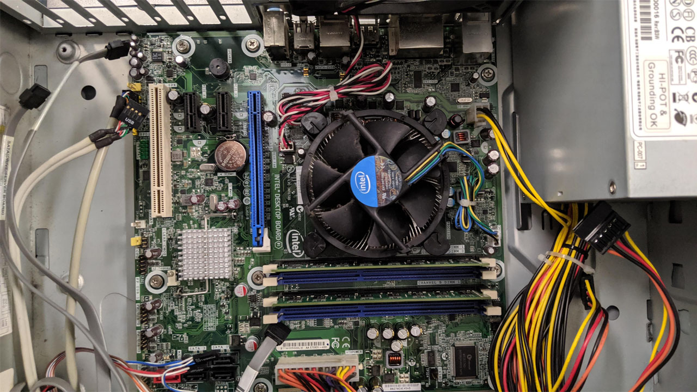
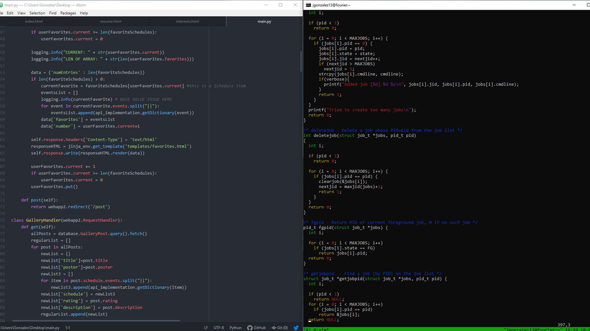
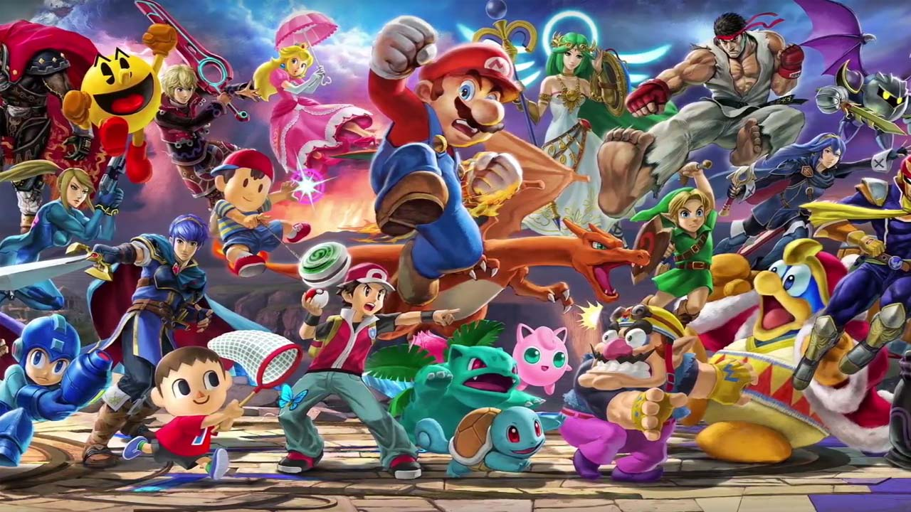
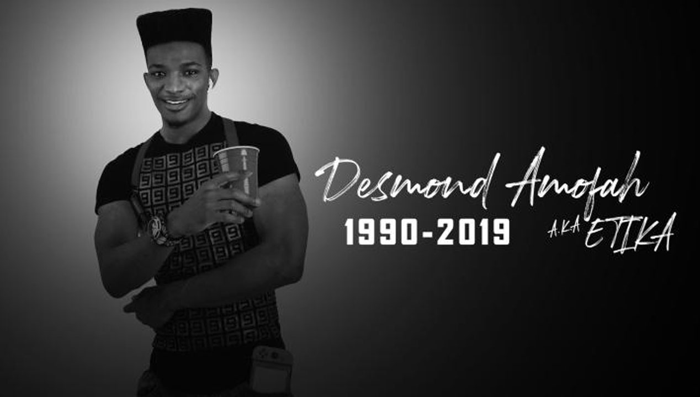

I have always had an interest in technology since I was a little boy. It started with me playing around with a computer and finding out what it was capable of performing. I then started modding all of the gadgets I had. I modded my phone, video game consoles, and even my watch. Today, I enjoy coding.
I have built a computer before.
I have also written hundreds, if not thousands of lines of code during my academic and personal programming career.
My favorite video game right now is Super Smash Bros. Ultimate. It is both a competitive fighting game and a casual party game, which means it accessible to a broad range of players. It also won the Best Fighting Game award at The Game Awards in 2019.
During my free time, I don't watch TV shows or movies. Instead, I watch YouTube. My most favorite youtuber of all time is Etika. He was a young streamer known for his energetic reactions and hilarious, yet sincere personality.
Unfortunately, Etika died half a year ago. However, he will always hold a special place in my heart.
